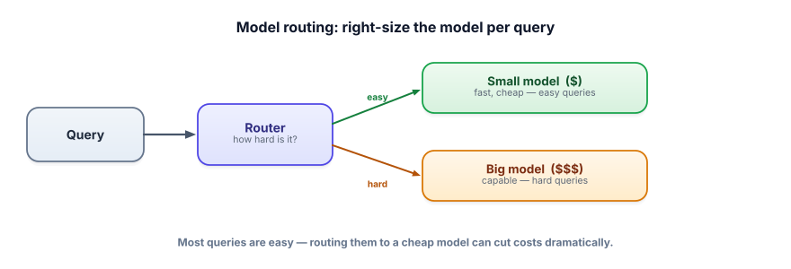

Model routing
Using your most powerful model for every request is like taking a helicopter to the corner store. Most queries are easy; routing them to a small, cheap model — and reserving the big one for hard cases — can cut costs dramatically with little quality loss.
Not every query needs your best model
Models vary enormously in cost and speed: a small model can be many times cheaper and faster than a frontier one. And real traffic is mostly easy — greetings, simple lookups, short classifications — interspersed with a minority of genuinely hard requests. Model routing exploits this: a lightweight decision sends each query to the cheapest model that can handle it, escalating to a bigger model only when needed. You pay top dollar only for the requests that actually require it.

Model routing chooses which model handles each request. A router can be rules (length, keywords, task type), a small classifier, or an LLM call itself. A cascade is a common pattern: try the cheap model first, and escalate to a bigger one only if the cheap model is unsure or its output fails a check. The goal is to move along the cost/quality frontier — getting most of the quality for a fraction of the cost.
Start with cheap heuristics; escalate only when needed. (Free models of different sizes via Ollama.)
def route(query):
# cheap heuristic router: short/simple → small model
if len(query) < 200 and not any(w in query.lower() for w in ["analyze", "explain why", "prove", "design"]):
return "small"
return "big"
def answer(query):
# CASCADE: try small first, escalate if it's not confident / fails a check
out = call("llama3.2:1b", query) # small, cheap, fast
if looks_uncertain(out) or not passes_checks(out):
out = call("llama3.1:8b", query) # escalate to a bigger model
return out
# Measure: what % escalates, and is quality on the small path acceptable? (Track 6)Even a crude router captures most of the savings, because the easy majority is genuinely easy. The art is tuning the threshold so you don’t send hard queries to the small model (quality drop) or easy ones to the big model (wasted money).
Route by task, not by habit
Compare sending everything to your best model against routing each task to the cheapest one that can still do it.
- Models vary hugely in cost/speed; most queries are easy — don’t use your best model for all of them.
- Routing sends each query to the cheapest model that can handle it (rules, a classifier, or an LLM judge).
- A cascade tries cheap first and escalates only on low confidence or a failed check.
- This moves you along the cost/quality frontier — most of the quality for a fraction of the cost.
- Measure the escalation rate and small-path quality; tune the router with data, not vibes.
Your chatbot uses a frontier model for everything; 80% of traffic is greetings and simple FAQs. What’s the highest-ROI change?
What's the idea behind model routing?
1. Give two simple, cheap signals a router could use to guess query difficulty.
2. What’s the risk of routing too aggressively to the small model, and how do you detect it?
3. Why is a cascade (try-cheap-then-escalate) sometimes better than a one-shot difficulty classifier?
▸ Show solutions & reasoning
1. Cheap signals: query length (short tends to be simpler), presence of reasoning keywords (“analyze,” “prove,” “design,” “why”) or task type (classification vs open-ended generation), the domain/category (FAQ vs novel request), and whether the answer needs tools/retrieval. None are perfect, but together they cheaply separate the easy majority from the hard minority. You can also use a tiny classifier trained on labeled examples.
2. The risk is quality loss — hard queries sent to the small model get worse answers, which you might not see in aggregate metrics. Detect it by measuring quality on the small-model path against your eval set (Track 6), and by monitoring online signals (escalations, retries, thumbs-down, handoffs) for the small-model segment. If small-path quality dips below your bar, tighten the router so fewer/only-truly-easy queries go small.
3. A one-shot classifier must judge difficulty before seeing any answer, and it’s imperfect — it’ll misroute some hard queries to the small model. A cascade lets the small model actually try, and you escalate based on its real output (low confidence, failed validation, refusal). That uses evidence rather than a prediction, so it can catch cases the classifier would have misjudged — at the cost of an extra call when escalation happens. Use a cascade when the cost of a wrong answer outweighs the occasional double call.
Routing is really about navigating a frontier: for any task, there’s a curve trading cost against quality, and your job is to sit at the best point for your requirements. The key insight is that the curve is rarely linear — for easy queries, a small model gets you to ~99% of the quality at ~10% of the cost, so forcing them through a frontier model is almost pure waste. The savings come from recognizing that quality demand is heterogeneous: different requests need different points on the curve, and a single model choice for all of them is a compromise that overpays for the easy and (if you picked small) underdelivers on the hard.
Two practical extensions. First, routing composes with everything else in this track — you cache first (skip the call), then route (right-size the call), then within the chosen model trim tokens and stream. Second, the router itself has a cost and an error rate: a cheap heuristic is free but coarse; an LLM-as-judge router is accurate but adds a call; a small trained classifier is a nice middle.
Choose the router sophistication that pays for itself, and — as always — measure: track the escalation rate, the cost saved, and the quality on each path, so routing is a tuned, monitored system rather than a guess. Done well, model routing is frequently the second-biggest cost lever after caching, and it lets you offer frontier-grade quality where it matters while keeping the bill sane.
So far we’ve optimized around the model. Now we make the model itself cheaper and faster to run — crucial when you self-host. Next: quantization.